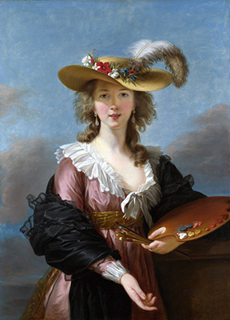

CSS image filters
Each tile applies a different filter; hover or keyboard-focus a tile to reveal the unfiltered original.

Each tile applies a different filter; hover or keyboard-focus a tile to reveal the unfiltered original.
